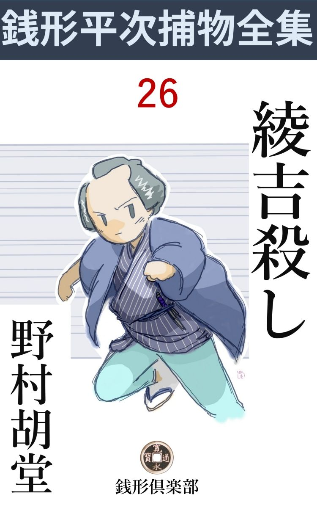
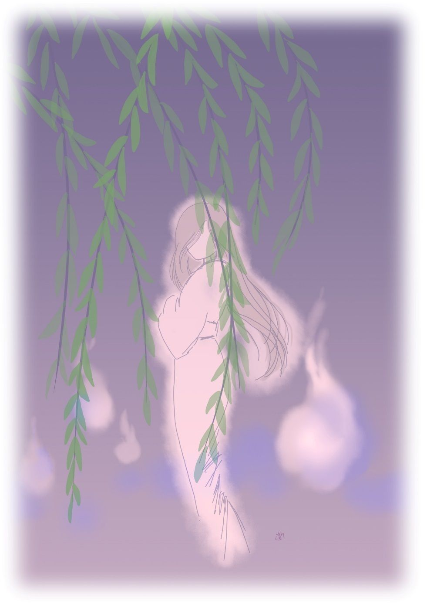

| 綾吉殺し: 銭形平次捕物全集第26話 (銭形倶楽部) | |
| 野村胡堂 | |
| ZENIGATA CLUB (2018) | |

一
「親分、幽霊を見たことがありますかい」
「そんなものに近付きはねえよ。もっとも化物 なら、この節は箱根の向うとは限らねえ、その辺にも大きな鼻の孔を掘っているぜ」
「ちぇッ、親分の前 だが、これでも町内の新造は大騒ぎだ。三日でもいいから、八さんと一緒になって苦労がして見たいってネ」
「新造じゃあるめえ。そいつは、横町に居る手前 のお袋だろう。この間もそう言っていたよ------何時までも親分のところに厄介になっているでもあるまいから、何んとか一軒持たせて、この母親を三日でも養う気になって貰いたいってネ、------六十八になる新造なんてのはないよ、罰 の当った野郎だ」
捕物の名人銭形平次と子分の八五郎、初夏の薫風 を満喫しながら、明けっ放した六畳でこんな無駄を応酬しておりました。
「やりきれねえな、------お袋の話は暫らく預って------」
「ガラッ八程の者でも気がさすだろう」
「ね、親分、意見は又改めて聴くとして、今日はその幽霊の話をさしておくんなさいよ」
「いやに執念が深いじゃないか」
「橋場の恵 大 寺 の墓場に、チョクチョク出るって話をお聞きですかい」
ガラッ八の八五郎は、両手を胸にダラリと泳がせて、怪談噺 の型になりました。
「聞かないでもないが、それがどうしたんだ」
平次も少し真剣になります。ガラッ八がまた何か素晴らしいネタを嗅ぎ出して来たらしいことに気がついたのでしょう。
「美 い女だってネ」
「何が」
「その幽霊がたまらない美い女だって言いますぜ」
「馬鹿だね。幽霊は大概女に決っているが、様子がよくたって足がなかった日にゃ、八の女房には不向きだよ。第一お惣菜 の買出しも質屋通いも出来ない」
「冗談------じゃない。ね親分、真剣に聴いておくんなさい。今まで町内の腕っ節の強いのが、何人退治に向ったか判らねえが、大概腰を抜かして、這々 の態で帰ってますぜ」
「粋 なもんだな、八」
「蘭塔場 で腰を抜かす図なんてえものは、あまり粋じゃありませんよ」
「話はそれだけか」
「これからが面白いんで、------我慢のなり兼ねた町内の若けえ者が、そっと寄って幽霊退治をしようと言うことになった。それが今晩ですぜ、親分」
「幽霊退治？」
「いずれ狸か狐の仕業だろう。撲ち殺して、煮て喰おうという寸法でさ」
「人間だったらどうする」
「へエ------」
「幽霊があるかないかは知らないが、恵大寺の墓場へ出るのは、足がありそうな気がしてならねえ。間違げえを起さなきゃアいいがな、八」
銭形の平次は妙なところへ気を廻しました。
「行って見ましょうか、親分」
ガラッ八はすっかり好奇心で有頂天です。
「岡っ引が顔を出したら、幽霊の方が驚くだろうよ」
「親分が顔を出しゃ一ぺんに露見するが、あっし なら大丈夫で。幸い植幸の離屋 を足場にすることになっていますが、植幸の親爺は長い間の懇意だから、何とか誤魔化 して勢子 に入れてくれますよ」
「二本足のある幽霊などを生捕ると後が面倒だぞ、気を付けるが宜い」
平次は笑っておりました。この馬鹿馬鹿しい幽霊退治が、どんな大事件の緒口になるか、ガラッ八はもとより、平次も知る由はなかったのです。
二
植木屋幸助の離屋 に集まったのは、恵大寺の門前から墓場へかけて、疎 らに建ち並んだ長屋の若い者が十二三人、灯の中に大勢いるうちは、幽霊などは手捕りにして、三 盃 にして喰いそうな顔をしておりますが、一人一人の胸の中は、相当ビクビクものだったに相違ありません。
「これで皆んなかい、何？ 地紙売の綾 吉 がいねえ」
植幸の親爺は、渋い茶を配りながら、一座の頭数を勘定しております。
「明日までに納める誂物 があるから、どうしても出られないって言ってたぜ」
石屋の力松は隅っこの方からこんな事を言っておりました。
「綾の野郎、急に商売気を出したもんだね、女でも引摺り込む心算 じゃないのか」
誰かが、交 ぜっ返す調子で、卑 しい笑いを笑っております。
「力 兄哥 、ちょいと覗いて見てくれ」
と植幸。
「又行ってくるのかい」
「若いのがたった一人欠けちゃ面白くねえ、用事もあるだろうが、町内交際 の積りで、ほんの一刻 顔を貸してくれ------って言やいいんだ、一杯やりながらお定まりの時刻を待つんだ」
「------」
「頼むぜ力兄哥」
「行かないとは言わないが、あの野郎の面を見ると、酒が不味 くなるぜ」
石屋の力松はノソリと立ちました。肩幅の広い、背の低い少し怪奇な感じはするが、二十五六の見事な恰幅 です。
「おっと、墓場を抜けて行っちゃ、打 ちこわしだ。力兄哥のような強そうなのを見掛けたら、一件の方で怖気 を振るって出るのを見合せるぜ。少し遠くて気の毒だが、寺の前から、番太の横へ入って貰おうか」
植幸の親爺は恐ろしく気が付きます。頭が禿げているくせに、若い者と一緒になって、騒ぎたくてたまらない性分だったのです。
「------」
大きい舌打を一つ、力松はそのまま、生暖い外の闇へ出ました。
「それから、言うまでもないことだが、女子供には内証 だぜ。町内の若けえ者が、一杯やりながら夏祭の相談をしているって触れ込みなんだ、解ったかい」
植幸の親爺は、力松の後ろ姿へ、こんな事を言っております。
それから暫らく経って、力松はフラリと帰って来ました。
「どうしたえ、力兄哥」
「せっせと地紙を折っているよ。あの様子じゃ、江戸中で一と夏使う扇 を一手に折る積りだろう、ヘン」
力松は憤々 としております。日頃、軽口と男っ振りで、若い女にチヤホヤされる綾吉が、癪にさわってたまらなかったのでしょう。
「放っときねえ、綾の野郎が一人いなかったところで、花 四天 に不足はあるめえ」
「違げえねえ」
二た間打 っこ抜いた離屋に、銘々勝手な姿態でとぐろを巻いた十二三人の若い衆は、人目を忍ぶ筈の寄合も忘れて、ドッと笑い崩れます。
その間ガラッ八の八五郎は、お茶を出したり、煙草盆の火を見たり、植幸の手伝いみたいなことをしております。町内の人に顔見知りのないガラッ八は、そんな事でもして、自分の存在を不思議に思わせない手段を採る外はなかったのです。
亥刻 過ぎから酒が出ました。
「あんまり飲むんじゃないぜ、今晩は大事な仕事があるんだから------」
そんな事を言いながらも、ツイ空きっ腹に沁み渡るアルコールの誘惑に克 ち兼ねて、お互に警戒しいしい猪口 を重ねます。
「さア、出かけよう」
植幸が号令をかけて、離屋の庭に勢揃いをしたのは、かれこれ子刻 ------。
「えて ものが店を張るのは、丑満と決ってるじゃないか。まだ少し早えよ」
力松はしたたかに酔って縁側からずっこけそうにこんな事を言っております。
「おっ母ア、離屋を頼むぜ、------帰って来たら熱い茶でも入れるように、後を片付けて置いて貰おうか」
惨憺 たる盃盤 を振り返りながら、植幸は母屋へ声を掛けます。
「ハイハイ」
少し不平そうな返事をしながら、植幸の女房は母屋から出て来ました。四十八九という、女が一番冷たい頭を持つ年配で、男達の馬鹿な騒ぎが苦々しくてたまらないと言った調子です。
「乳母 や、私一人じゃ怖い」
「まア、お嬢さん」
植幸の女房の後から蹤いて来たのは、十七八の娘、遠い灯に照されたところを見ると、その儘薫風を残して闇に消え入りそうな美しさです。
「お嬢さん、心配なさることはありませんよ、すぐ帰って来ますから」
と植幸。
「でも------」
大勢の見ている手前、明るい離屋の方へ行くこともならず、娘は母屋の庇 の下に、やるせない姿で佇 んでおります。お糸と言って、植幸が出入している日本橋通三丁目の両替屋伊勢屋伝右衛門の娘、植幸の女房は昔その乳母をしていた関係から、仔細あって、この半年の間預かっているのでした。
植幸の女房は、お糸の思惑 などに構わず、離屋へ行って、惨憺たる盃盤の後を片付けております。
三
その晩の幽霊退治は、どんなに馬鹿馬鹿しいものであったか、詳しく書く必要はありません。
兎 に角 、墓場の中で、怪しい青火を見かけたことは事実で、そのうちの二三人は、黒髪を振り乱した怪しい者の姿に出 っ逢 わし、石塔の立て込んだ墓場の隅に追い詰めましたが、最後の一瞬に、怪しの物は石塔の頭を四つ五つ飛んで、柳の大枝にフワリとブラ下がると、そのまま身を翻 して、塀の外の闇に融 け込んでしまったことも事実だったのです。

その時はもう、青火も何んにも見えず、闇は漆 の如く濃くて、怪しの物の逃げ行く姿もよくは解りませんでしたが、兎に角、鼠色の長い裾、振り乱した黒髪、青白い顔などは、誰の眼にもハッキリ焼き付けられました。
妖気紛々たる割に、身体に活々した弾力のあるところを見ると幽霊というよりは、狐 狸 の仕業と言う類いかもわかりません。闇の中で石塔の頭の上を渡って逃げ、柳の枝から往来へトンボ返りに降りた身軽さは、とても人間業とは思えなかったのです。
「それッ、幽霊が塀の外へ逃げた」
誰やらがこんな事を言うと、十二三人の勇士は、待ってましたとばかり、------
「ワーッ」
と墓場の外へ飛出してしまいました。が怪しの物は何時までもその辺に愚図愚図している道理はありません。
幽霊退治は散々でしたが、その代り墓場の塀外に飛出した同勢が、大変なものを発見してしまったのです。
「綾吉、精が出るね」
地紙売の綾吉の長屋の前に差しかかった時、その中の一人がこう声を掛けながら、格子の外から、障子 の破れを覗いて驚きました。
「わッ、た、大変ッ、綾吉がやられたッ」
「何ッ、綾吉が」
咄嗟 に表戸を蹴破って、飛込んだのが二三人、一と目中の様子を見ると、
「あッ」
暫らくは口も利けずに立ち縮 みました。居間とも仕事場ともつかぬ、取っ付きの六畳、長火鉢の前に仰向けになった綾吉は、碧 血 の海の中に空 を掴んでこと切れていたのです。
地紙売というと、元禄以前から寛政のころまで流行 った商売で、江戸では一番粋な稼業にされておりました。四月頃から気のきいた単衣に、足袋、雪駄 穿 きの姿で、地紙型の箱に、扇の地紙を入れそれを両懸にして、『地紙、地紙、地紙扇』と呼び歩き、呼込まれると、即座に折って渡すか、手の込んだのは、註文だけ聞いて、翌る日届けるようにしたものです。
地紙売は大抵若い良い男で、良家の息子などの道楽の果が多く、洒落 た身扮 をした上、役者の声色 や、軽口に、物真似などを景物に、街から街と流したのですから、当時は人気のある商売だったに相違ありません。
その中でも、橋場の綾吉は通り者で、男が良いのと、軽口上手で、大店 の娘、お屋敷方の女中などから、廻って来るのを待ち遠しがられるほどの人気でした。
その綾吉が殺されたのです。
「皆んな掛り合いだ、帰っちゃならねえよ。誰か、三輪 の親分を呼んで来い」
年上の植幸は、早くも事態の重大さに気が付いて、入口に立ちはだかったままこんな事を言っております。
幸い、綾吉の長屋のツイ三四間先は番太の小屋で、子刻 前は油障子を開けて、親爺は草履 などを作っているのでした。
「親方、どうかしましたか」
番太の親爺は驚いて顔を出します。
「爺 さん、大変ッ、綾吉が殺された。三輪の親分へ一と走り頼むぜ、------それから順序は違うが、帰りに町役人へ声を掛けてくれ、何と言っても、下手人を捜 すのが先だ」
「へエ------」
番太の親爺は飛んで行きました。御用聞の三輪の万七は、ツイこの近所に住んでいたのです。
ガラッ八は今更名乗りもならず、黙って成行を見ております。しかしその注意はさすがに商売柄で、万七が来るまでに、大体の急所を掴もうと働いているのでした。
四
「何？ 綾の野郎が殺された、どうせそんな事だろうと思ったよ」
三輪の万七は、冒瀆 的な猛々しい顔をヌッと出しました。番太の親爺が迎いに行ってから、四半刻も経つでしょうが、綾吉の死にざまの凄まじさに、十二三人の若い同勢も、ツイ口を切る者もないほど緊張していたのです。
「親分、大変なことになりましたよ」
植幸は救われたような声を出しました。
「どうせ女出入りだ、遅かれ早かれ、殺される野郎さ」
万七は六畳の間に入ると、血 飛沫 の間を拾って死体に近づきました。後ろからはお神楽 の清吉、虎の威を借りて、これも肩で風を切ります。
「親分、それにしても惨虐 しい殺しようですね」
と清吉、さすがに点々たる地紙と、血潮の海と、その上に引っくり返った、綾吉の恐ろしい形相に眉を顰 めました。
「清吉、手を貸しな」
「へエ------」
二人がかりで死骸を起して見ると、傷は脳天へたった一つ、先の尖った重い鈍器で叩いたものらしく、径一寸ほどの穴が開いて、血潮と脳漿 が四方に飛散っております。
「ひどい事をしやあがる。清吉、灯を見せてくれ」
万七は部屋の中を捜しておりましたが、やがて、表の入口の格子の下、丁度上り框 の蔭になって誰にも一寸気の付かない辺りから、二尺ほどの柄の付いた、先の尖った鉄槌 ------石屋が石を割る時使う玄翁 に、血潮と脳漿の付いたのを見付け出しました。
「お、そこに力松がいるじゃないか」
万七が声を掛けると同時に、お神楽の清吉は、飛付いて力松の手首を掴みました。
「神妙にせえ」
「あ、あっしは、何にも知らねえ」
この時の力松の顔ほど、打 ち壊しな絶望的なものを見たことがありません。
「言いわけはお白洲 でするんだ、立てッ」
と清吉は威猛高でした。
「俺じゃねえ。俺は皆んなと一緒にいたんだ」
力松はヘタヘタと板敷に崩折れました。
「皆んなと一緒にいた？ 本当か、植幸、大事なことだ、よく考えて返事をしろ」
一脈の不安さがあったのでしょう。万七は、植幸の親爺の困惑し切った顔を吃 っと見据えました。
「宵に綾吉を誘ってもらった時の外は、力兄哥はずーっと、皆んなと一緒でしたよ」
誰やらが植幸の返事を横合から取って口を出します。
「宵に誘った？」
万七の眼は、却って疑わしい光を増します。
「今晩の幽霊退治に、綾吉だけ出て来なかったので、亥刻 時分に、力兄哥に誘わせましたが、用事があるんだって、到頭来ませんでしたよ」
と植幸。
「亥刻 なら宵でもあるまい」
血潮の固りようを眺めながら、万七は一歩突っ込みました。
「親分、番太から聞きましょう、表から入るには、番太の前を通る筈ですから」
清吉は一ぱし鼻を蠢 めかします。
「フーム、それもよかろう。------一体亥刻 からこっち、綾の家へ来たのは誰と誰だえ」
万七は事務的に番太へ問い進めました。
「へエ、亥刻 頃力兄哥が来て暫らく話して帰った切りですよ。表から誰も入りゃしません。子刻 時分から幽霊退治が始まったようですが、私などは幽霊とは縁のない方で、何時もの通り子刻 には表の油障子を締めて、寝支度にかかりましたよ」
「そうだろう。力松、言い訳があるかい。亥刻 時分に来た時、綾の野郎を殺し、素知らぬ顔をして植幸へ帰って行ったろう。お上に手数をかけさせずに、皆んな申上げたらどうだ、お慈悲を願ってやるぜ」
万七はすっかりしたり 顔です。
「親分、そりゃア無理だ。あっし は何にも知らねえ、------表から入らなくったって、曲者は墓場を抜けて裏からも入れるんじゃありませんか」
「この玄翁 はどうしたんだ」
「それはあっし のに違いありません。が、誰が持って来たかわかったものじゃない」
「馬鹿な事を言えッ、それに、これを上り框 の下に隠してあったのは、表から出入した証拠だ------清吉、文句を言わせちゃ際限 がねえ、行こうぜ」
「へエ------」
縄尻がピシリと鳴りました。
「あっ、痛ッ」
五
「三輪の親分、待っておくんなさい」
「何んだ」
入口の薄暗がりへ、万七は立止りました。
「下手人はその男ではありません」
「何？」
「力松が殺したのなら、槌 をそんな所へ捨てて行く筈はないでしょう」
妙に自信のある抗議を聞いて、万七と清吉は振り返って見ました。
「お、八五郎じゃないか」
「へエ------」
「大層な口を利くじゃないか、------平次兄哥 に言い付けられて来たのか」
万七の調子には棘 があります。
「そんなわけじゃありません。幽霊退治の仲間入りをして、ツイいろんな事を見たんで------」
縄張争いのうるさい万七が相手だけに、ガラッ八もすっかり用心深くなります。
「大層運が良いんだね、------一体どんな事を見たんだ」
「その石屋の力松とか言うのは、亥刻からずっと今しがたまで、あっしの側を離れませんぜ」
「成程ね。八五郎兄哥が下手人の相棒でないとすると、これは一応もっともだが、亥刻 時分に、綾の野郎を誘いに来たとき殺 したとしたら、どうだ」
「それも考えましたよ、------番太の爺 さんに聞いて御覧なさい。力松が帰った後、綾吉の家の灯 が暫らく点いていたのが半刻ばかり経って消えたそうですよ」
「------」
「力松が殺 してから半刻も経って、わざわざ灯を消しに忍び込んだ者があったとは考えられませんぜ」
「風が入って灯を消すとか、丁子 が溜って独りで消えるとか------」
「雨模様で風はなかったし、障子は皆んな締め切ってありますよ。行燈に破れはなく、丁子なんかも溜っちゃいません」
「------」
万七は少しばかり躊躇しましたが、
「親分、平次の子分の指図を受けたとあっちゃ、旦那方へ申訳が立ちませんよ」
お神楽の清吉は、たまり兼ねて袖を引きます。
「行こう、清吉。------八五郎兄哥、気の毒だが玄翁が力松のものでないと解るまでは、この縄は解けねえよ。神田へ帰ったら、平次へよくそう言ってくれ、人の縄張を荒す心算ならもう少しイキの良いのをつれて、平次が自分で来るがいい------ってな」
「------」
八五郎は黙ってこの悪罵を受けました。三輪の万七とは、あまり貫禄が違い過ぎてもいたのです。
六
「親分、こんなに口惜しいことはありません。道理はこっちにあっても、貫禄の違いがあるから、その上押して口が利けねえ。癪にさわって、癪にさわってたまらねえから、綾吉の長屋を始め、恵大寺の界隈 を夜っぴて捜し廻りましたよ」
ガラッ八は本当に口惜しそうでした。神田の平次の宅を叩き起すと、まだ明け切らぬうちから、こんな騒ぎをおっ初めます。
「うるさいな、手前 は口惜しかろうが、俺はまだ眠いよ」
「それどころじゃないよ。親分、起きて一と目これを見ておくんなさい。下手人は判らねえが、夜っぴて墓場を捜し廻って、幽霊の正体だけは掴んだ積りだ」
「何？ 幽霊の正体が解った、------幽霊が解りさえすれば、下手人はすぐわかる筈じゃないか」
ガラッ八の獲物を重大と見たか、職業意識が働くと、平次はガバとはね起きました。
二三枚雨戸を繰ると、金泥 を撒いたような初夏の朝の光が、さッと部屋の中まで流れて入るのでした。
「親分、お早う」
「馬鹿ッ、今頃挨拶 する奴があるものか。------その幽霊の正体というのを話して聴かせな。狐かい、狸かい」
「そんな間抜けなものじゃねえ。親分、墓場の丁度幽霊を追い詰めたあたりに、青い紙を貼った提灯が一つ落ちていたんだ」
「へエ------、器用な幽霊だね」
「それから、塀の下には、鬘 が一ツ掛け」
「小道具はそれっきりか」
「それだけで沢山じゃありませんか。提灯と鬘が見付かった上は、幽霊は二本足のある人間に決ったようなものだ」
ガラッ八も大分したり顔でした。鼻の頭がヒョコヒョコとうごめきます。
「人間は最初 っから解っているよ。俺はどんな人間か知りたかったんだ」
「どんな人間？」
「そうさ。そんな手数のかかる真似をするのは、どんな野郎で、何が目当てだか知りたかったんだ。行って見よう、八」
「どこへ行くんで」
「恵大寺へ行って、今朝イの一番に墓詣りしたのは誰か訊くんだ」
「------」
「青い提灯と鬘を落した奴は、きっと捜 しに来るよ。八五郎兄哥が、昨夜のうちに取込んでいるとは気がつくまい」
「なアる程」
二人は宙を飛びました。神田から橋場へ------、恵大寺に着いたのは辰刻 頃。
真っ直ぐに門前の花屋へ飛込んで聞くと、
「夜の白々明けに、踊の師匠のお喜多さんが墓場へお詣 に行きましたよ」
「えッ」
「あんなに早いお墓詣りは、年に一度もありゃしません」
そんな事を言っております。
お喜多と言うのは、この町内に長く住んでいる手踊の師匠で、年は若いが、その頃江戸中に響いた女の一人です。
成程お喜多なら、石塔の上も自在に飛ぶでしょうし、柳の枝から塀外へ、トンボ返りをして逃げるような芸当も朝飯前でしょう。
平次とガラッ八は、何んとはなしに顔を見合せました。
「親分、しょっ引いて来ましょうか」
それを聞くと八五郎、すっかり勢い込んで、猟犬 のように駆け出しそうな気組になります。
「いや、お喜多は踊の名人だ。玄翁 で人を殴り殺すような不粋 な事をする筈はない」
平次は考え込みました。
「名人だって人を殺さないとは限りませんぜ。それに、下手人は裏口から入ったに決っているから、幽霊に化けたお喜多の外にあるわけはありません」
ガラッ八も負けてはいません。
「お喜多でなくたって、裏口から入れるだろう。幽霊退治の同勢は一刻も植幸の離屋で飲んでいたんだろう」
「それは親分、現場を見ないから言うことだ。墓場は高い塀を廻らしてあるし、鼻を摘 まれても解らないような闇だ。塀を飛越して提灯でも持って行くか、植幸の庭を通らなきゃア、墓場を通って綾吉の長屋へ行く道はねえ」
「成程、表は番太が見張っている。------と、寺の本堂からそっと墓場を抜ける手もあるぜ」
「それも如才なく、昨夜のうちに見て置きましたよ。雨戸は中から締っているし、湿々 した軒下に足跡一つねえ」
「それじゃ、矢張り俺の負けか、ハッハッハッ、八五郎も大層器量がよくなったぜ」
「親分、からかっちゃいけません。あっし は真剣なんで------あの万七の野郎の鼻を明かしてやらなきゃア、男が立たねえ」
「つまらぬものを押っ立てようとすると、事が無理になるぜ。俺はもう少し洗いてえことがある。手前はお喜多に当って見るがいい、あわてて仕損じるな」
平次は踵 を返しました。
「親分、何を洗いなさるんで」
「綾吉の身元だよ。それから、石屋の力 松 が誰に惚れているかも知って置きたい」
「親分」
「お喜多が何だって幽霊の真似なんかしたか、それをよく訊いて置くんだよ」
七
「お喜多姐さん、お早う」
「あッ、お前さんは？」
見たこともない男に声を掛けられて、踊りの師匠のお喜多はぎょッとした様子でした。
二十三四------そろそろ年増にもなろうという方ですが、美しさは存外で、その細骨のキリリとした手足も、豊かな胸も、すんなりした首も、張り切った眼も、紅い唇 も、女盛りの妖艶さを撒 き散らすようで、臆面のない八五郎も、何となく近づき兼ねました。
「引越しかえ、お喜多さん、少し手伝って上げようか」
「いえ、あの------」
お喜多は大たじたじです。狭い家の中一パイに取り散らかして、置舞台の上には、風呂敷包が二つ、葛籠 が一つ、引越の手伝いを待つ風情に置いてあるのでした。
お喜多は逃げる積りだ------。早くもそう感付いたガラッ八は入口に立ち塞 がるように、精一杯の冷酷な調子で追及しました。
「実はね、お喜多姐さん、紛失物を届けに来たんだが------」
「------」
「何でもありゃしないよ。青い提灯と鬘 さ。昨夜恵大寺の墓場で、綾吉が殺された時分に拾ったんだが、心当りがないとは言わないだろうね」
「えッ」
お喜多は色を喪 いました。よろよろとなると、僅かに葛籠に支えられて、胸を抱いたまま、踊の幕切 のような悩ましい姿態 になります。
「ね、お喜多姐さん、何んだって又幽霊の真似なんかしたんだ。それも一度や二度じゃあるまい、それから聞かして貰おうか」
「------」
八五郎は少し有頂天でした。こんな大物、しかも若くて美しくて、ピチピチして、江戸中に聞えた獲物を前にして、思わずドッカと坐り込んだものです。懐から出した手が、ツイ長い顎を爪繰 ります。
「お前さんは何んだい」
お喜多は漸く備 を直しました。単衣の裾を固く合せると、鱗形 の帯の端をギュッと引絞ります。
「名乗る程の者じゃねえ」
「何んだとえ、懐から十手なんか覗かせて、------名乗る程の者じゃねえ------が聞いて呆れらア。さア、退 いておくれ、邪魔だよ」
「お喜多、舌が長 えぞ」
「何を言やがる。朝っぱらから人の家へ上り込んだりしやあがって、気色の悪い。帰らないと大きな声を出すよ」
「存分に張り上げて見るがいい。------綾吉殺しの下手人が引かれて行くところだ、町内の衆に見物をさせるか」
お喜多の辛辣 な舌に激発されるともなく、八五郎もツイこんな事を言ってしまいました。
「おや、訝 しな事を言うね、私が綾吉を殺したとでも------」
お喜多は言葉が詰って、ゴックリ固唾 を呑みました。
「当り前 よ。幽霊なんかの真似をして綾吉と逢引した上、痴話 喧嘩が嵩 じて殺したに違えねえ。昨夜墓場の隅へ追い詰めたのは俺だ、とは気が付かなかったろう」
「違う、違うよ」
「青い提灯と鬘が何よりの証拠だ。まだ家捜したら、鼠色の裾の長い単衣も出て来るだろう」
「違うよ」
「さア、それでも下手人でないって言い張るなら、お白洲 の砂利を掴んで申上げろ」
「違うよ。私が別れて帰った時は、綾さんは上機嫌で生きていた」
「何を」
お喜多は必死でした。懐の捕縄を探しながら一歩、一歩、迫って来るガラッ八を押し隔 てるように、思わず置舞台に足が掛ります。
「誰が殺したか、私も敵が討ってやりたい。教えておくれ」
「お前の胸に訊くんだ」
「えッ、訳の解らない岡っ引じゃないか。幽霊の冗談は私だが、殺したのは私じゃないと言うのに」
「何を言やがる。覚えのない者が、逃げ支度をするかい」
ガラッ八は一歩詰め寄りました。万七への面 当 て、ここでお喜多を縛って、石屋の力松を助けてやりたい心持で一パイだったのです。
「えッ、何て解らない唐 変 木 だろう」
辛くも八五郎の手を逃れたお喜多は、さっと後ろへ飛びました。石塔の上を渡って、柳の枝から塀外へトンボ返りをする軽捷な身体ですが、涙一パイ溜めた眼で距離を見積り損ねたものか、風呂敷包に足を取られて、思わず舞台の上へもんどり打ちます。
「神妙にしろ」
折重なってガラッ八、力ずくとなるとお喜多は手も足も出ません。蛇のような捕縄がキリキリと女の華奢 な身体を巻いて行くのでした。
八
「親分、面目次第もありません」
「何だ、ひどく萎気 ているじゃないか。力松が下手人と決ったとでも言うのかえ」
平次は何の蟠 まりもなくガラッ八を迎えました。お喜多を縛った翌る日の朝のことです。
「下手人はどう考えてもお喜多の外にはねえと思い込んで縛って来ましたが、どうも変なんで------」
「何が変だえ」
「あれほど証拠が揃っているのに、肝腎のお喜多はサメザメと泣くばかりでどうしても口を割らねえ。笹野の旦那も、力松の縄を解いてしまったものの、これじゃどうすることも出来ません」
「フム、俺もお喜多が下手人ではあるまいと思うよ」
「あっし も段々お喜多が下手人でないような気がするんで」
ガラッ八は鬢 の後ろを掻きながら、臆病らしく平次を見上げました。
「お喜多を縛る時は、たいした意気込みだったじゃないか。もっとも風呂敷包に躓 ずかなかったら、手前の手におえる女じゃなかったが------」
「あッ、あれを見ていなすったのかい、親分」
「そうだよ。あんな結構な立廻りは、木戸を払っても滅多に見られるもんじゃねえ」
「人が悪いなア。------お喜多が下手人でないと解っていたら、なんだって又止めてくれなかったんです」
「あの時は俺にも解らなかったんだよ。お喜多を縛らせて、様子を見たかったんだ」
「驚いたなア」
ガラッ八はすっかり凹んでしまいました。
「それで、どうしようというんだ」
「もう一つ困ったことがあるんで------ツイ二三日前、親分はあっし のお袋の噂をしていましたろう」
「ウム」
「そのお袋がやって来て、------お前橋場のお喜多を縛ったって言うじゃないか。飛んでもない。あの娘 は私の師匠の娘で言わば恩人だよ。踊 も縹緻も申分のない人だが、少し浮気っぽいから、若い男に見せちゃ毒だと思って、お前には黙っていたが、それを縛っちゃ、知らなかったでは済まされないよ------とこう言うんで」
「それは宜かった」
「ちっとも宜かありません」
「浮気っぽいから、伜 に逢わせないという親心が嬉しいじゃないか」
「親分、冗談は冗談、本当に何とかしておくんなさい。親不孝は仕馴れているが、綺麗なのを縛って置いちゃ、男冥利 が悪い」
「馬鹿野郎、何んて口の利きようだ」
こんな事を言いながらも、平次はガラッ八の親思いを知りつくしております。
「親分、お願いだ」
「俺には大方見当だけは付いたが、まだ解らないことがある」
「兎に角、お喜多の縄を解いてやって下さい」
「一度縛ったものを、真当 の下手人が挙がる前に許して貰うのは難しいが、お喜多が殺したのでないことだけは確かだ」
「どんな証拠があるんです、親分」
「あの玄翁 は両手で振りおろしたのじゃない。両手で使ったら、血 飛沫 で全身蘇芳 を浴びたようになる筈だ。------あれは二枚屏風 を小 楯 に、片手で打ちおろしたんだ。お前も屏風一面に飛 沫 いた血を見たろう」
「------」
「あの玄翁を片手で使って、寸分の見当の違わないところを見ると、男の手で、それもあんな道具を使い馴れた人間だ」
「それじゃ、力松」
ガラッ八はゴクリと固唾 を呑みました。ここで万七にしてやられては眼も当てられません。
「いや、力松はズーッと皆んなと一緒にいた筈だ。幽霊を捕え損った時は、手前の傍にいたって言うじゃないか」
「へエ」
「力松でないとすると------」
「------」
「変な顔をするなよ、八、お喜多じゃないよ。------番太の親爺が、力松が綾吉の長屋から出た後で、半刻ばかりして灯 が消えたって言ったろう」
「その通りですよ、親分」
「灯を消したのは、幽霊の真似をして忍んで来るお喜多と逢引する為だったろう。それはよく解るが、子刻 過ぎに死骸を見つけた時、灯がカンカン点いていたのはどうしたわけだ」
「えッ」
「お喜多が下手人なら、暗いところで逢引して、綾吉を殺してから、灯を点けて逃げたことになる------幽霊姿のお喜多がだよ」
「しめたッ、親分、それでお喜多の疑いは晴れた。笹野の旦那にお願いしてお喜多を許して貰いましょう」
「待て待て八、まだ話がある」
平次の声を背後に聞いて、八五郎はスッ飛びました、八丁堀へ------。
九
「お喜多、打ち明けて言ってくれ。八の野郎が面喰って縛ったのは如何にも悪かったが、お前にも落度はないと言えまい------」
「親分、飛んでもない。八五郎さんなんかを怨んじゃいません。元々私の悪戯 が過ぎたんですから」
お喜多は、自分の家へ帰って来ると、そこに待ち構えていた平次の前へ、面目次第もない面を伏せました。
八丁堀からの道々、いろいろ八五郎に聞かされて、二人の母親同士の関係もわかり、平次の骨折りも呑込んで、すっかり打ち解けた心持になっていたのでした。
「この上は本当の下手人を挙げて、皆んなを安心させてやりたい。ね、お喜多、言い憎いこともあるだろうが、諸人の為に洗いざらい話してくれ」
「------」
お喜多はおどおどした瞳 を上げました。名題の鉄火者も、恥多い自分の姿を振り返って、さすがに口を緘 みます。
「第一に聴きたいのは、綾吉とは何 日 頃 から親しくなったか、昨夜はどんな話をして別れたか------」
平次の問はかなり突っ込んだものでしたが、観念し切った様子で、お喜多は思いの外スラスラと話して行きました。
その話と言うのは、------
綾吉は名題の性悪男で、地紙売を商売にしながら、何人となく女を拵えました。不思議な魅力の持主と言うものでしょう、憎らしい憎らしいと思いながら、強 か者のお喜多も、誘惑された一人だったのです。
表通りは人目が多いので、墓場の中を通って綾吉の長屋へ通ううち、臆病な人に見つかって、幽霊と間違えられたのが、ひどくお喜多の好奇心を嗾 りました。大の男が蘭塔場の中で物の見事に腰を抜かす図は、お転婆で気象者で、物好きで人の悪いお喜多に取っては、何とも言いようのない面白い観物だったのです。
一つは、自分の忍ぶ恋路の邪魔をされない為に、お喜多は進んで幽霊になりすまし、青い紙を貼ったブラ提灯や、鬘 や鼠色の長い単衣を用意して、若い男達を脅かして、変態的な喜びにひたっていたのでした。
たまたま気の強いのに追っ駆けられたところで、軽捷な身体を利用すれば、案内知ったお喜多は万に一つも捕まる惧 れはなかったのです。
幽霊退治の催 のあった晩は、さすがにお喜多も二の足を踏みましたが、二三日前から綾吉と堅い約束があって、その晩限り別れる話になっていたので、虎の尾を踏む心持で出かけて行ったのでした。
「どうして別れ話が持ち上がったのだ」
ここまで黙って聴いていた平次は、漸く謎を解く鍵 を掴んだように、屹とした顔を上げました。その清麗な瞳に的面 に見据えられると、お喜多ならずとも、腹の底までも見透されるような心持になります。
「綾さんは、植幸にいなさる伊勢屋のお嬢さんと、半歳も前から掛合いがあったんですよ」
「そうだろうと思ったよ」
「一度は私が勝ちました。この二 月 ばかりはお嬢さんへ見向きもしなかったのが、お嬢さんが日本橋の家へ帰ると聞くと急に私の方に別れ話を持ち出したんです」
「フーム」
「私が幽霊の真似をして行くと、始めのうちはひどく面白がったのが、近頃はそれもあんまり気乗りのしない様子で、近いうちにあの長屋を引払って、どこかへ引越すかも知れないような事を言っていました。どうせ江戸一番の性悪男だから、お嬢さんと縒 を戻したか、でなきゃア新しい女でも拵えたんでしょう」
「有難う、お喜多さん、それで大方筋が解ったよ。ところで力松は？」
「あれは可哀想な男ですよ、三年越私を口 説 き廻している正直者で------。今度は思い切って一緒になりましょうかしら、少し男は悪いが」
「それがいいよ、お喜多さん、二人は縄目の縁もあるぜ」
八五郎は横合から口を出しました。
「八さん、お前さんが縛ったのじゃないか。黙っておいでよ、お前さんと一緒になるって言やしまいし」
「へッ」
八五郎まさに一言もありません。
十
平次はその足ですぐ植幸の親爺を訪ねました。墓場に続いた広い庭には、商売物の植木を先の見透しがきかぬほど植え込んで、一方は寺、一方は低い石垣を距 てて、石屋の庭から、綾吉が住んでいた長屋に通じております。
「親方、伊勢屋のお嬢さんはいなさるかい」
「これは、銭形の親分、何か御用で」
「いや、お嬢さんに用事があるには相違ないが、その前に親方の耳へ入れて置きたいことがある------」
「へエ」
五十がらみの頑丈な植幸、何となく一徹 らしいのが、相手が相手だけに、不安な心持をおさえて、ソワソワと離屋の方へ案内して行きます。
「言い憎いなア、親方」
「へエ」
「綾吉殺しの下手人が判ったんだよ」
「えッ」
「力松やお喜多じゃない。------もっと思いも寄らぬ人だ」
「誰でしょう、親分」
「あの晩、この離屋にいた人間だ」
「すると」
恐ろしい焦躁と不安に、植幸の唇は雁皮 紙 のように顫えます。
「幽霊退治の同勢が墓場へ飛込んだ後で、そっと石屋の庭から、綾吉の長屋へ行けるのは、親方のところのお神さんと、伊勢屋のお嬢さんだけだ」
「えッ」
「お神さんは離屋を片付けていた」
「------」
「お嬢さんは綾吉と夫婦約束をしたことがあるんだってネ」
平次は急に飛んでもない話をします。
「そんな事が、親分」
「綾吉はそれを反古 にして、お喜多に夢中になったんだろう。お嬢さんが腹の立つのも無理はないが、玄翁 で殴り殺すのは少し荒っぽいな」
「親分」
植幸は植木の蔭に踞 まると、平次の袂 に縋り付いて、ワナワナと顫えておりました。
「気の毒だが、お嬢さんに縄を打たなければなるまい」
「親分、お目こぼしを願います」
「綾吉は悪い男だ、------捨てられた口惜しさに、取りのぼせて殺しただけなら犬とも思うが、何にも知らぬ力松に罪を被 せようとしたり、幽霊退治などを始めて、お喜多にまで疑いをかけさせたやり口は憎いな」
「親分、一日、たった一日待っておくんなさいまし。お願い、お願いでございます」
植幸は大地に両手を突いて、ボロボロと泣いておりました。
× ×
その晩、植幸は離屋の梁 に細紐を掛け、自害してしまいました。
「やはりあの親爺ですかい、親分。------どうかしたら、主人の娘の罪を背負って行ったんじゃありませんか」
様子を見に来たガラッ八が、うさん臭い鼻をするのを、平次は事もなげに打消して、
「馬鹿な、女が下手人でないと言ったじゃないか。------俺がああ言って脅 かさなきゃア、植幸の親爺はまだまだ横着 に構えて、三人目、四人目の下手人を拵える積りだったんだよ」
こんな事を言います。
「それにしちゃ、おかしいなア」
「幽霊退治の騒ぎの時、あっと言う隙に植木の間を潜って、石屋の庭から綾吉の長屋へ行ったんだ。皆んな幽霊で夢中になって、気がつかなかったんだよ------もっとも植幸の親爺だけは幽霊の正体を知っていたのさ」
「何だってまた綾吉を殺す気になったんでしょう」
「綾吉は、お糸が日本橋の家へ帰るのを待って、押しかけ婿に行く積りだったんだ。伊勢屋ではどうせ素直に承知をする筈はないから、揉み抜いた揚句、大金の手切をせしめる心算 さ。お喜多と別れ話をしたのは、その下心だよ」
「なアるほど------」
「植幸はお喜多の幽霊姿を捕えて、綾吉の悪 企 みを封ずる積りだったが、急に気が変って、一と思いに綾吉を殺したのさ。------主人の娘を預かって、疵 物 にして返した上、押掛婿などに行かれては、植幸の面目が立たないだろうじゃないか」
「成程、恐れ入ったネ。銭形の親分は見透しと御座いッ」
「馬鹿ッ。つまらねえ事を言うな」
二人は肩を並べて、神田へ------お静は銅 壺 の湯加減を気にしいしい待っている頃です。
（編注）
作品中には、身体の障害や人権にかかわる、差別的な語句や表現が見られますが、本書が成立した当時の時代背景等が現代とは異なる古典的な文学作品でもあり、著者が故人でもありますので、底本のままとしました。ご理解、ご諒承のほどをお願い申し上げます。
著者---野村胡堂
挿絵---萩 柚月 © 2017
初出---「オール讀物」昭和九年三月号 文藝春秋社
底本---「錢形平次捕物全集」第二巻 河出書房 昭和三十一年五月三十一日初版
編集・発行 銭形倶楽部